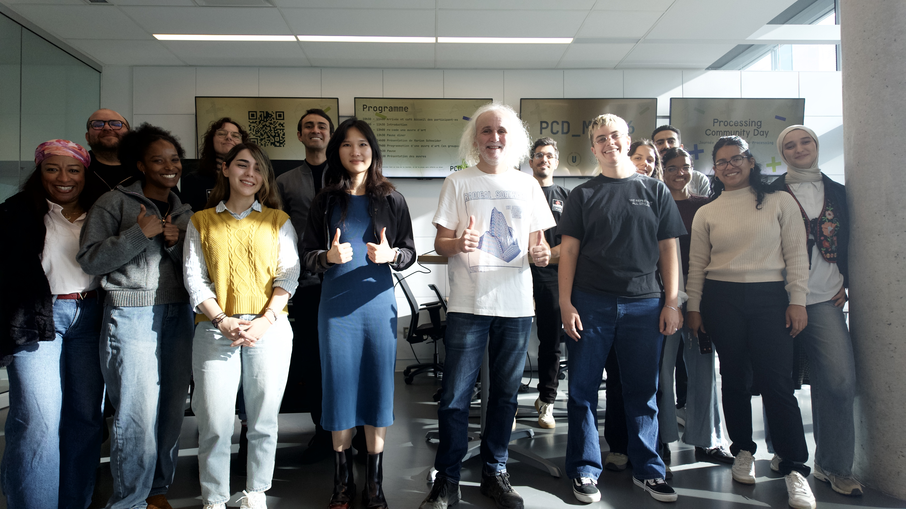
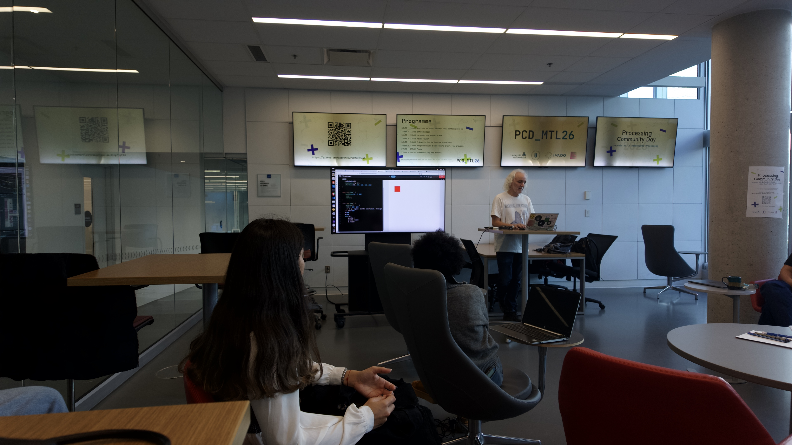

PCD @ Montreal 2026
On October 24,2026, we (Marion Schneider, Lena MK, Indiana Delsart, Emir Chouchane and myself) organized the Processing Community Day in Montréal, QC, CA. Early in 2026, the Processing Foundation launched a call for community days worldwide to celebrate art, open source software and the 25th anniversary of the foundation. As a strong admirer and believer in all these themes I thought it would be fantastic to have one community in Montreal. In this post, I summarize some elements about the organization, the funding and the actual day. This summary is inspired by Beccas Rose's summary of PCD @ Bristol 2019
Basic Info
Name of event: PCD @ Montréal, Journée de la communauté Processing
Date: 24 October 2026
Venue: Bibliothèque des sciences, Université de Montréal
Organising team: Benoit Baudry, Marion Schneider, Lena MK,
Indiana Delsart, Emir Chouchane
Schedule
The day happened from 11 am to 7pm. We organized it in 2 parts, each part started with a presentation, followed by hands-on programming. In the morning, I gave an introduction about generative art, the Processing foundation and a live demo inspired by Vera Molnar's neuf carrés rouges; after that all participants explored Processing or p5.js and experimented with variations around these 'carrés'. In the afternoon, we started with a presentation by Marion who explained how she learned about Processing and open source while studying art, and then showed how she incorporates code into her art practice; then all participants continued exploring, programming and learning. The day ended with all participants showing their artwork and sharing their code.

Preparation
A few months before the event, we assembled the organizing team and received strong support from the library of Université de Montréal for hosting and co-organizing the day. Pretty early in the process, we fixed the date, a draft schedule, the exact location; then we setup the website and a system for registration (both hosted by the University library). We also secured some funding to cover for food and some material. Closer to the event, we focused on disseminating the event's info and arranging a schedule.
Resources
We had access to the following resources:
Tech. The University library provided wifi and could provide laptops. Eventually all participants had their own laptop
Funding.
We had some funding from IVADO an Montreal-based organization that supports research and education in the areas of data science and computer science.
In particular, they have a mission of supporting digital literacy and that's how this PCD fits in their agenda.
Internal communication.
We used cryptpad to share ideas and notes, and github to collaborate on the web site's design and content.
Code sharing. We used OpenProcessing github
Venue.
We had one room in the library with a screen, armchairs and tables for everyone, extension cords and speakers.
We were able to offer the following resources to participants: room, wifi, screen, snacks, coffee and lunch, as well as custom pcd stickers.
Promotion
The website was the main support for promotion. We disseminated the information through our social media accounts, University's communication, networks of colleagues and collaborators and posters.
Costs
The event was free for all participants, and we asked them to register to calibrate logistics. No one was paid to speak at the event,
and all equipment was provided for free by the University.
Costs were for food and stickers, which was around 600 CAD for 15 participants.
Who attended ?
Students, engineers, artists. Below are a few pictures and more can be downloaded here

